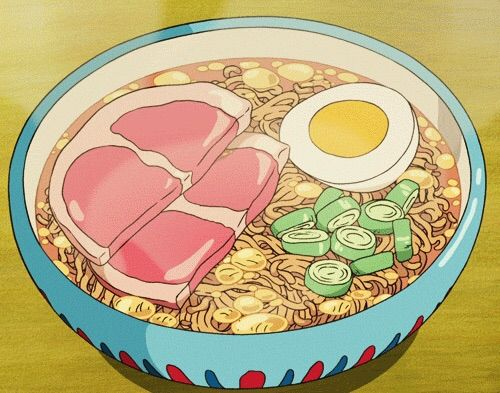

Ponyo's Ramen

Recipe for the delicious and succulent Ramen served in Studio Ghibli's "Ponyo" movie.
Time: 3 min
Number of servings: 1
Ingredients:
- 1 package Nissin Chicken Ramen
- 400ml of water
- 1 slice cooked ham (cut in half)
- 1/2 hard boiled egg
- Choppen green onions
Instructions:
- Boil the water
- Place the noodles in a ramen bowl. Pour boiling water over the noodles and cover. Set and start your timer for three minutes
- After the first minute, quickly open, shake the noodles to separate, then arrange the ham, egg, and green onion over the noodles. Cover again and wait until the timer beeps.